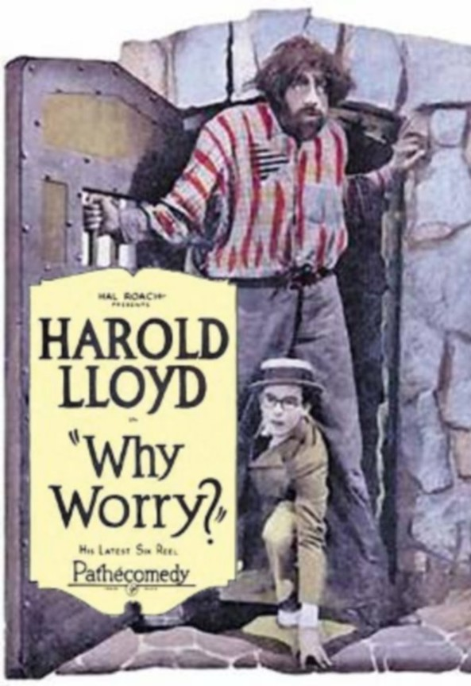
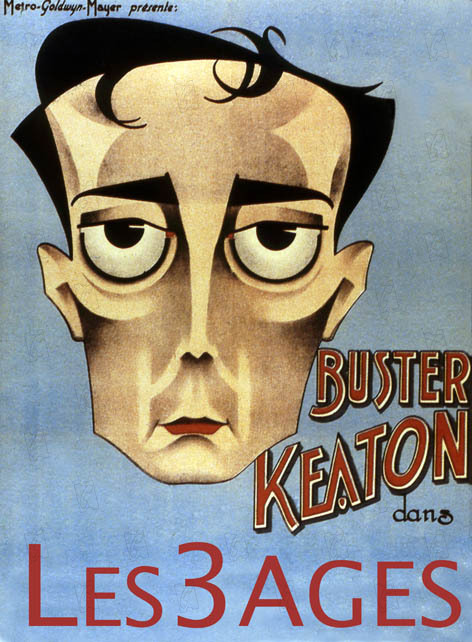

Faut pas s'en faire
DeFred Newmeyer,Sam Taylor
AvecHarold Lloyd,Jobyna Ralston
Genre : Comédie
Nationalité : Américain
SYNOPSIS ET DÉTAILS
Harold von Pelham, riche Américain hypocondriaque, débarque à Paradisio pour s'y reposer. Mais en fait Paradisio est en plein coup d'Etat.
Titre original : Why Worry ?
Année de production : 1923
Type de film : Long-métrage
Langues : Muet
Format production : 35 mm
Couleur : N&B
La Croisière du Navigator

Date de sortie : 13 mars 1925(0h 59min)
De Donald Crisp, Buster Keaton
Avec Buster Keaton, Kathryn McGuire, Frederick Vroom plus
Genre : Comédie
Nationalité : Américain
SYNOPSIS ET DÉTAILS
Un couple loufoque composé de Rollo Treadway, un aristocrate fainéant, et de la roturière Betsy se retrouve seul à bord d’un navire à la dérive alors que la demoiselle a récemment écarté une demande en mariage du jeune homme. Dès lors, ils s’organisent pour survivre loin de leurs domestiques et du confort, enchaînant les situations rocambolesques jusqu’à jeter l'ancre près des côtes d'une île pas si déserte qu'elle n'y paraît.
Titre original : The Navigator
Distributeur : Splendor Films
Récompense : 1 nomination
Année de production : 1924
Type de film : Long-métrage
Couleur : N&B
Les Trois Ages
De Buster Keaton,Edward F. Cline
Avec Buster Keaton, Margaret Leahy, Wallace Beery plus
Genre : Comédie
Nationalité : Américain
SYNOPSIS ET DÉTAILS
Durant l'âge de pierre, la Rome Antique et les Années folles, un jeune amoureux tente de gagner le cœur d'une belle jeune femme. Mais ses plans sont constamment contrecarrés par la présence de son rival, bien plus à son avantage que lui.
Titre original : The Three Ages
Année de production : 1923
Type de film : Long-métrage
Langues : Muet
Couleur : N&B
Le Mécano de la Génerale

Date de sortie : 24 février 1927(1h 29min)
De Clyde Bruckman, Buster Keaton
Avec Buster Keaton, Marion Mack, Glen Cavender plus
Genres : Action,Comédie
Nationalité : Américain
SYNOPSIS ET DÉTAILS
Le cheminot Johnnie Gray partage sa vie entre sa fiancée Annabelle Lee et sa locomotive, la Générale. En pleine Guerre de Sécession, il souhaite s'engager dans l'armée sudiste, mais celle-ci estime qu'il se montrera plus utile en restant mécanicien. Pour prouver à Annabelle qu'il n'est pas lâche, il se lance seul à la poursuite d'espions nordistes qui se sont emparés d'elle et de sa locomotive...
Titre original : The General
Récompenses : 2 nominations
Année de production : 1926
Type de film : Long-métrage
Secrets de tournage: 15 anecdotes
BudgetUS : $ 750 mil
Langues : Muet
Couleur : N&B
Monte La Dessus

DeFred C. Newmeyer,Sam Taylor
Avec Harold Lloyd, Mildred Davis, Bill Strother plus
Genres : Comédie,Romance,Thriller
Nationalité : Américain
SYNOPSIS ET DÉTAILS
Harold est venu à Los Angeles pour faire fortune. Mais il stagne dans son job de petit vendeur. Il a une idée : proposer à son patron de faire de la publicité au magasin en faisant escalader la façade par un ami acrobate. Sauf que voilà : c'est lui qui va devoir s'y coller !
Titre originalSafety last
Récompense1 nomination
Année de production : 1923
Type de film : Long-métrage
Langues : Anglais
Couleur : N&B
Petit Frère

De Harold Lloyd, Lewis Mileston plus
Avec Harold Lloyd, Jobyna Ralston, Leo Willis plus
Genre : Comédie
Nationalité : Américain
SYNOPSIS ET DÉTAILS
Harold, dernier des trois fils du shérif Hickory, va sauver malgré lui son père, accusé à tort de détournement d'argent, en poursuivant les deux voleurs.
Titre original : The Kid Brother
Année de production : 1926
Type de film : Long-métrage
Langues: Muet
Couleur : N&
Sherlock Junior

De Buster Keaton
Avec Buster Keaton, Joe Keaton, Kathryn McGaire plus
Genre : Comédie
Nationalité : Américain
SYNOPSIS ET DÉTAILS
Projectionniste dans un modeste cinéma, amoureux de la fille de son patron, un homme rêve de devenir un grand détective. Un jour, tandis qu'il rend visite à la demoiselle de ses pensées pour lui offrir une bague, son rival dérobe la montre du père, la place chez un prêteur sur gages puis glisse le billet dans la poche du pauvre amoureux. Celui-ci se met à jouer les détectives amateurs. Confondu, il est chassé de la maison...
Titre original : Sherlock Jr.
Année de production : 1924
Type de film : Long-métrage
Langues : Muet
Couleur : N&B
Vive le sport

De Fred Newmeyer, Sam Taylor
Avec Harold Lloyd, Jobyna Ralston, Brooks Benedict plus
Genres : Comédie,Famille
Nationalité : Américain
SYNOPSIS ET DÉTAILS
Harold Lamb est la risée du collège. Une victoire inattendue au match de foot va lui permettre de changer sa réputation.
Titre original : The Freshman
Récompense : 1 nomination
Année de production : 1925
Type de film : Long-métrage
Langues : Muet
Couleur : N&B